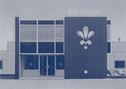

Doelstellingen
Met de jaarlijkse uitreiking van de Welstandsprijs trachten wij
- zowel leek als deskundige - inzicht te geven in wat belangrijk is bij
de totstandkoming van een ontwerp. Hiermee proberen wij architectonische
en ruimtelijke kwaliteit van de gebouwde omgeving te stimuleren. Daarnaast
brengt de prijs de waardering van geïnteresseerden en professionals
voor wat gebouwd wordt dichter bij elkaar. Het spreekt voor zich dat het
van belang is dat het stimulerend effect en de betekenis van Welstandszorg
duidelijk aan het licht komen.
 |
 |
 |
Door aandacht te vragen voor de kwaliteit in met name het kleine en alledaagse bouwen en het bouwen in de regio proberen wij deze doelstellingen te realiseren. Elke opgave, groot of klein, standaard of uitzonderlijk, van lokaal, regionaal of landelijk belang, verdient de zorg van een goede vormgeving. Elke omgeving heeft baat bij die zorg.